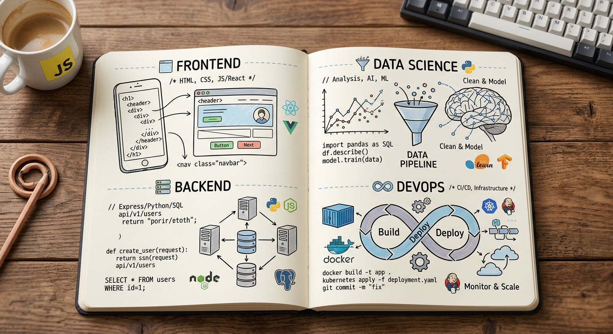

👆 Haz clic en cualquier cuadrante del cuaderno (Frontend, Backend, Data Science o DevOps) para enfocar y estudiar sus Flashcards.

Estudiar Frontend
Estudiar Backend
Estudiar Data Science & IA
Estudiar DevOps & Cloud
Frontend
1 / 4
Cargando pregunta...
Haz clic o presiona Espacio para voltear
Explicación Didáctica
Respuesta
Cargando respuesta...
Pista didáctica / Analogía
Pista...
Haz clic para volver a la pregunta
Tarjeta 1 de 4
Almacenamiento OCI: Conectado (Always Free)
Score de Anclaje RAG: 98%